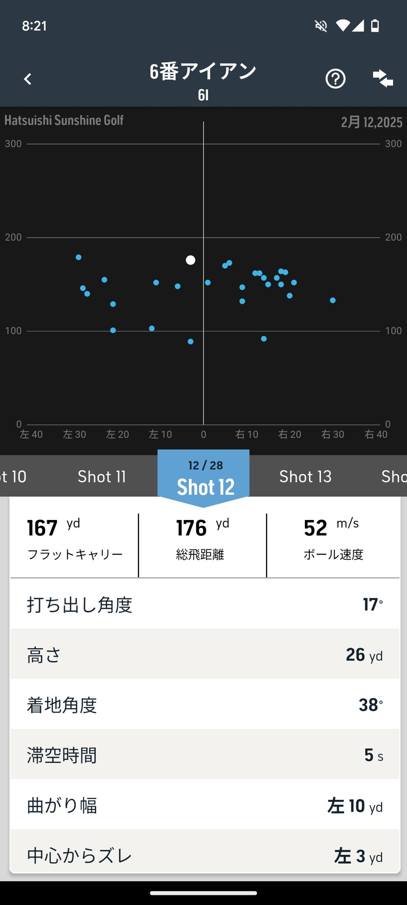

<- 日記
ゴルフの打ち方を全く変えてみてる。この動画を参考にしてる。
https://m.youtube.com/watch?v=b_AfG0BfJto
これで6Iを試したところトータル175〜180ヤードくらい飛ぶようになってきて、かつ曲がりも少なくなってきた。

胸郭から動かす動きも入れ始めてるのでそっちが効いてる可能性もあるんだけど、今のところいい感触なので練習を続けるつもり。
ただ、この打ち方だとドライバーがうまく打てない。たぶん体が沈んでしまっているので明日直す。